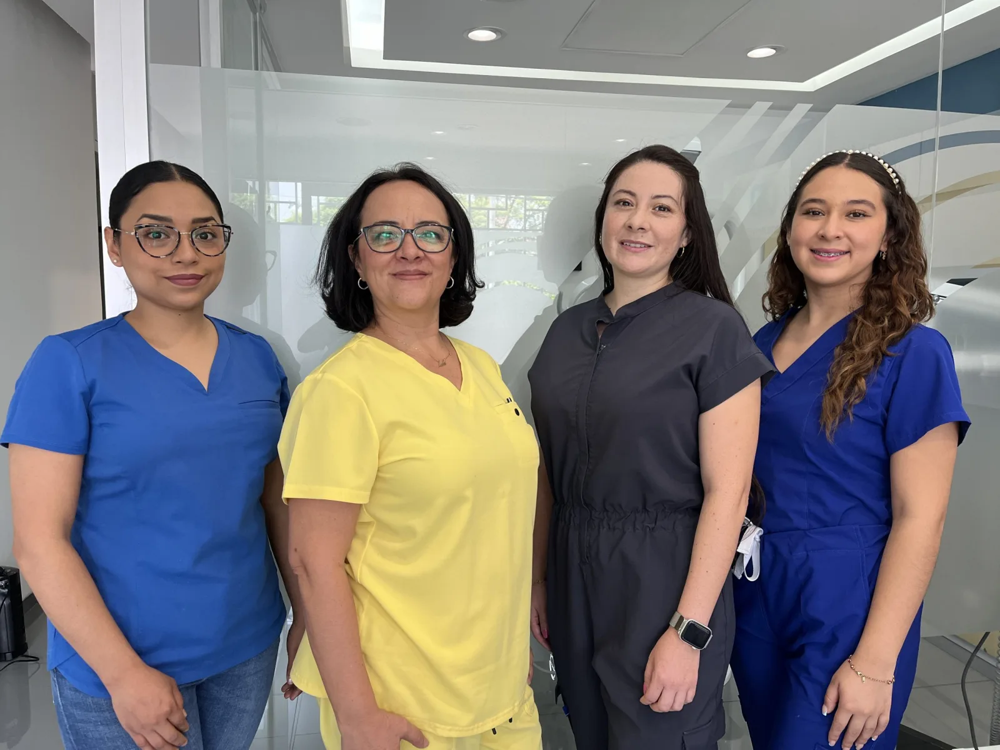
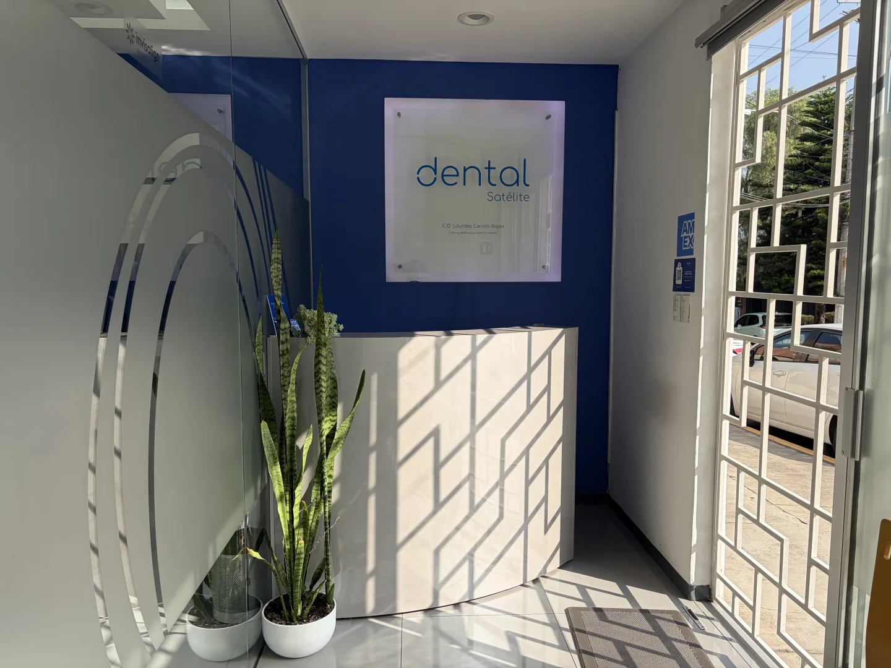

01
Diseño de sonrisa
Un plan estético en armonía con tu rostro.
Conoce el tratamiento
Valoramos dientes, encías y mordida para definir un plan que puede incluir blanqueamiento, ortodoncia, restauraciones, carillas o implantes.
Odontología integral · Ciudad Satélite
Prevención, estética y rehabilitación en un mismo lugar. Un equipo que te escucha y te acompaña con un plan de atención personalizado.
Atención especializada
para cada etapa de tu sonrisa

Diagnóstico claro.
Tratamiento preciso.
ODONTOLOGÍA CON PROPÓSITO
Reunimos distintas áreas de la odontología en un mismo lugar para acompañarte en cada etapa de tu tratamiento. Comenzamos con una valoración clínica y te explicamos las opciones según tus necesidades.
Nuestra filosofía →Tratamientos
Desde prevención hasta rehabilitación completa, diseñamos un plan claro y personalizado para ti.
Un plan estético en armonía con tu rostro.
Valoramos dientes, encías y mordida para definir un plan que puede incluir blanqueamiento, ortodoncia, restauraciones, carillas o implantes.
Una opción para reemplazar dientes perdidos.
Los implantes de titanio se colocan en el hueso para recuperar la función sin desgastar los dientes contiguos. La valoración permite determinar si son adecuados para tu caso.
Cuidar hoy empieza por conocer tu salud bucal.
Revisamos dientes, encías, mordida, articulación y tejidos de la boca. Según el caso, se complementa con fotografías y estudios. Orientamos sobre cepillado, hilo dental, flúor y selladores.
Atención quirúrgica según tus necesidades.
Realizamos extracciones de terceros molares, colocación de implantes y procedimientos de preservación o aumento de hueso, regeneración ósea y manejo de encías, según la valoración clínica.
Alineación dental y armonía en la mordida.
Ofrecemos brackets y alineadores transparentes Invisalign. Tras evaluar tu caso, te explicamos qué alternativa de tratamiento se adapta mejor a tus necesidades.
Tratamiento para ayudar a conservar tu diente.
Limpiamos y sellamos el interior de un diente dañado o infectado para tratar la causa del dolor y procurar conservarlo.
Recupera función al comer, hablar y sonreír.
Las prótesis permiten reemplazar uno o varios dientes perdidos o restaurar dientes dañados. Definimos la alternativa de rehabilitación a partir de tu valoración.

Estás en las mejores manos.Nuestra esencia
Conoce a nuestro equipo de profesionales de la salud. Cuidamos cada detalle para ofrecer una experiencia dental diferente, profesional y con un trato cercano.
Nuestro equipo
Profesionales que te acompañan con atención cercana y un plan pensado para ti.
Responsable del consultorio
Cirujano dentista
Cédula profesional 1624170 · UNAM
Equipo clínico
Licenciada en odontología
Cédula profesional 11940440 · UCAD
Equipo clínico
Cirujano dentista
Cédula profesional 15202278 · UNAM
Equipo clínico
Cirujano dentista
Cédula profesional 9822972 · UNITEC
Equipo clínico
Cirujano dentista
Cédula profesional 5864972
Tecnología
Recursos digitales que nos ayudan a estudiar tu caso y planificar tu tratamiento.
El radiovisiógrafo permite obtener imágenes de los dientes y verlas directamente en la computadora para apoyar la valoración clínica.
Obtenemos modelos digitales de tu boca para compartirlos con el laboratorio y facilitar la elaboración de los tratamientos que los requieren.

El consultorio
Te recibimos en Ciudad Satélite para escuchar tus necesidades y acompañarte durante tu atención dental.
Planea tu visita ↓La experiencia
Queremos que te sientas escuchado,
seguro y en las mejores manos.
Conocemos tus necesidades, dudas y objetivos.
Evaluación precisa con tecnología moderna.
Un tratamiento transparente y hecho para ti.
Seguimiento cercano antes, durante y después.
Visítanos
Escríbenos para consultar horarios disponibles y agendar tu valoración.
Da el primer paso
Agenda una valoración y descubre el tratamiento ideal para ti.
Agendar por WhatsApp ↗